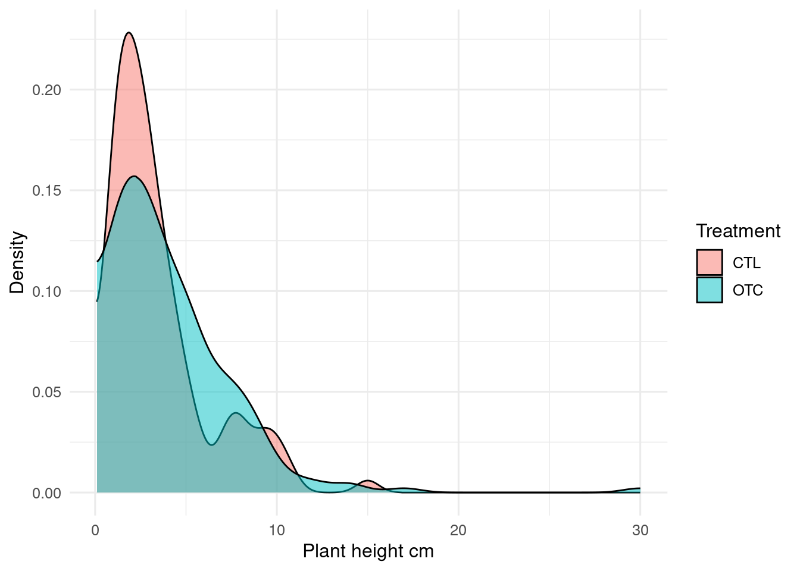

learn how to add figures, tables, equations and formulae to your quarto document
4.1 Figures made in R
Plots can be included with a chunk that makes a figure with either base plot or ggplot.
If you make the plot with ggplot, remember to print it.
```{r}#| label: fig-histogram#| fig-cap: "An embedded figure"#| fig-alt: "A histogram of plant heights made with ggplot2"#| message: false#| warning: falsep <-ggplot(trait_height, aes(x = Value)) +geom_histogram(boundary =0) +labs(x ="Height cm")p # remember to print the plot```
Figure 4.1: An embedded figure
ImportantFigure labels
The label for the figure block must start with fig- for the figure to get a figure number and be possible to link to. See Chapter 6 on cross-referencing.
4.1.1 Figure code block options
There are several useful block options for figures, including:
fig-cap figure caption.
fig-alt alternate text to improve accessibility
fig-height figure height in inches (1 inch = 25.4 mm)
fig-width figure width in inches
NoteExercise
The figure of height against treatment is missing a caption. Use code block options to give it an appropriate caption and alt-text.
Many journals require figures to be a specific size so they fit with the journal layout. For PLOSone, figures that fit in one column can be up to 13.2 cm (5.2 inches) wide. Use code block options to ensure that the figure would fit.
TipR code in chunk options
Sometimes it is useful to have R code in the chunk options.
We can do this by putting !expr before the R code. For example, this chunk makes the figure caption include how many species there are in the dataset. It could be written with paste() but I prefer glue::glue() syntax - the code in the braces {} is evaluated and included in the sentence.
```{r}#| label: fig-r-in-chunk-options#| fig-cap: !expr glue::glue("Heights of the {nrow(trait_height)} plants measured")#| fig-alt: "A density plot of plant heights made with ggplot2"#| message: false#| warning: falsep <-ggplot(trait_height, aes(x = Value, fill = Treatment)) +geom_density(bounds =c(0, Inf), alpha =0.5) +labs(x ="Plant height cm", y ="Density")p```

Figure 4.2: Heights of the 422 plants measured
TipSetting default ggplot themes
When you make a ggplot figure, you can specify the theme you want to use. For example, to use theme_classic(), we could change the previous figure’s code to
p<-ggplot(trait_height, aes(x =Value, fill =Treatment))+geom_density(bounds =c(0, Inf), alpha =0.5)+labs(x ="Plant height cm", y ="Density")+theme_classic()p
To give all the figures in a document a consistent theme, you can set the default theme near the start of the document, perhaps in the code block where the package are loaded, with theme_set().
You can also set the default font size with the base_size argument to theme_classic(). Now we don’t need to add theme_classic() to every figure. You can learn more about themes here.
4.2 Embedding external images
In the visual editor, photographs and other figures that have been prepared outside of R can be included with the insert tool by typing “/” on a blank line and choosing “Figure/Image”. This will open an menu to get the path to the image and set the caption etc. Once you close the menu, you can set the figure size. This will generate a bit of markdown that looks like.
{fig-alt="SEM photograph of marine diatoms" width="491"}
```{r}#| label: fig-include-figure#| out-width: "491px"#| fig-cap: "An embedded figure of diatoms"#| fig-alt: "An embedded figure of diatoms"knitr::include_graphics("Pics/Marine_diatoms_SEM2.jpg")```
Figure 4.3: An embedded figure of diatoms
Use the out-width and out-height chunk options to set the display size of the figure.
4.3 Tables
You can make tables in markdown by hand (the // insert tool helps a lot), but it often so much easier to use R.
Simple tables can be made with the function knitr::kable. Several packages, including kableExtra and gt can make beautiful tables.
The block label need to start with tbl- if the main caption and table number are to be shown.
4.3.1 gt
The gt package can make more elaborate tables than knitr::kable().
```{r}#| label: tbl-gt#| tbl-cap: Tables with `gt()`library(gt)# summarise datatrait_height_summary <- trait_height |>group_by(Taxon) |># calculate mean, sd and number observations for each taxonsummarise(mean =mean(Value), sd =sd(Value), n =n()) |># filter species with at least ten observationsfilter(n >=10) trait_height_summary |>gt() |># just gt() is enought to make a table# improve column namescols_label(mean ="Mean", # Display column headerssd ="Standard deviation",n ="Number" ) |># format some columns as numbers - defaults to two decimal placesfmt_number(columns =c(mean, sd)) |># adds a spanner above some columnstab_spanner(label ="Height", columns =c(mean, sd))```
Table 4.1: Tables with gt()
Taxon
Height
Number
Mean
Standard deviation
bistorta vivipara
3.75
1.81
77
carex rupestris
3.71
1.34
22
cassiope tetragona
8.09
2.45
16
dryas octopetala
2.76
1.54
45
equisetum arvense
4.07
4.71
38
equisetum scirpoides
1.79
1.45
60
festuca rubra
7.04
2.09
19
poa arctica
7.87
2.33
34
salix polaris
2.04
1.10
72
TipNumber of decimal places
When reporting real numbers (i.e. numbers that have a decimal part), you need to decide how many digits to display. Be careful not to show spurious precision. You can use round() to remove unwanted decimals, or gt::fmt_number() to clean up one or more columns in a table.
NoteExercise
Write a code block to make a table showing the mean leaf thickness and its standard deviation for each treatment.
Equations are embedded in a pair of dollar symbols. RStudio will show a preview of the equation as you type it. Equations are written with LaTeX notation.
What
How
Output
Lower-case Greek letters
$\sigma$
\(\sigma\)
Upper-Case Greek Letters
$\Sigma$
\(\Sigma\)
Subscript
$\beta_{0}$
\(\beta_{0}\)
Superscript
$\chi^{2}$
\(\chi^{2}\)
Fractions
$\frac{1}{2}$
\(\frac{1}{2}\)
Roots
$\sqrt{4} = 2$
\(\sqrt{4} = 2\)
Here is an example of using an inline equation.
The $\delta^{13}C$ value ...
The \(\delta^{13}C\) value …
A double dollar enclosure gives the equation its own line. For example, this is the equation of a standard deviation that uses several different elements.
When making a complex formula, build one element at a time, often starting in the middle, rather than trying to get it all working at once.
4.5 Chemistry
Equations are printed in an italic font, which is not great for chemical formulae. We can fix this with the \mathrm LaTeX command which forces roman typeface.
---editor_options: markdown: wrap: sentence---```{r setup, include=FALSE}library(tidyverse)source("../Templates/biostats_theme.R")```# Figures, tables and equations```{r}#| label: data#| include: falsetraits <-read_delim("data/PFTC4_Svalbard_2018_ITEX_Traits.csv")# filter out height datatrait_height <- traits |>filter(Trait =="Plant_Height_cm") |>drop_na(Treatment)```::: callout-note## In this chapter, you will- learn how to add figures, tables, equations and formulae to your quarto document:::## Figures made in RPlots can be included with a chunk that makes a figure with either base plot or ggplot.If you make the plot with ggplot, remember to print it.```{r}#| echo: fenced#| label: fig-histogram#| fig-cap: "An embedded figure"#| fig-alt: "A histogram of plant heights made with ggplot2"#| message: false#| warning: falsep <-ggplot(trait_height, aes(x = Value)) +geom_histogram(boundary =0) +labs(x ="Height cm")p # remember to print the plot```::: callout-important## Figure labelsThe label for the figure block must start with `fig-` for the figure to get a figure number and be possible to link to.See @sec-cross-referencing on cross-referencing.:::### Figure code block options {#sec-figure-chunk-options}There are several useful block options for figures, including:- `fig-cap` figure caption.- `fig-alt` alternate text to improve accessibility- `fig-height` figure height *in inches* (1 inch = 25.4 mm)- `fig-width` figure width *in inches*::: callout-note## Exercise The figure of height against treatment is missing a caption. Use code block options to give it an appropriate caption and alt-text.Many journals require figures to be a specific size so they fit with the journal layout. For PLOSone, figures that fit in one column can be up to 13.2 cm (5.2 inches) wide. Use code block options to ensure that the figure would fit.:::::: callout-tip## R code in chunk optionsSometimes it is useful to have R code in the chunk options.We can do this by putting `!expr` before the R code.For example, this chunk makes the figure caption include how many species there are in the dataset.It could be written with `paste()` but I prefer `glue::glue()` syntax - the code in the braces `{}` is evaluated and included in the sentence.```{r}#| label: fig-r-in-chunk-options#| echo: fenced#| fig-cap: !expr glue::glue("Heights of the {nrow(trait_height)} plants measured")#| fig-alt: "A density plot of plant heights made with ggplot2"#| message: false#| warning: falsep <-ggplot(trait_height, aes(x = Value, fill = Treatment)) +geom_density(bounds =c(0, Inf), alpha =0.5) +labs(x ="Plant height cm", y ="Density")p```:::::: callout-tip## Setting default ggplot themesWhen you make a ggplot figure, you can specify the theme you want to use.For example, to use `theme_classic()`, we could change the previous figure's code to```{r}#| label: fig-theme#| echo: true#| eval: falsep <-ggplot(trait_height, aes(x = Value, fill = Treatment)) +geom_density(bounds =c(0, Inf), alpha =0.5) +labs(x ="Plant height cm", y ="Density") +theme_classic()p```To give all the figures in a document a consistent theme, you can set the default theme near the start of the document, perhaps in the code block where the package are loaded, with `theme_set()`. ```{r}#| label: theme-set#| eval: falselibrary(tidyverse)theme_set(theme_classic())```You can also set the default font size with the `base_size` argument to `theme_classic()`.Now we don't need to add `theme_classic()` to every figure.You can learn more about themes [here](https://biostats-r.github.io/biostats/workingInR/118_themes.html).:::## Embedding external imagesIn the visual editor, photographs and other figures that have been prepared outside of R can be included with the insert tool by typing "/" on a blank line and choosing "Figure/Image".This will open an menu to get the path to the image and set the caption etc.Once you close the menu, you can set the figure size.This will generate a bit of markdown that looks like.`{fig-alt="SEM photograph of marine diatoms" width="491"}`{fig-alt="SEM photograph of marine diatoms - from https://commons.wikimedia.org/wiki/File:Marine_diatoms_SEM2.jpg" width="491"}Alternatively, you can use `knitr::include_graphics()` in a regular code block.```{r}#| echo: fenced#| label: fig-include-figure#| out-width: "491px"#| fig-cap: "An embedded figure of diatoms"#| fig-alt: "An embedded figure of diatoms"knitr::include_graphics("Pics/Marine_diatoms_SEM2.jpg")```Use the `out-width` and `out-height` chunk options to set the display size of the figure.## TablesYou can make tables in markdown by hand (the {{< kbd / >}} insert tool helps a lot), but it often so much easier to use R.Simple tables can be made with the function `knitr::kable`.Several packages, including `kableExtra` and `gt` can make beautiful tables.The block label need to start with `tbl-` if the main caption and table number are to be shown. ### gtThe [`gt`](https://gt.rstudio.com/articles/intro-creating-gt-tables.html) package can make more elaborate tables than `knitr::kable()`.```{r}#| label: tbl-gt#| echo: fenced#| tbl-cap: Tables with `gt()`library(gt)# summarise datatrait_height_summary <- trait_height |>group_by(Taxon) |># calculate mean, sd and number observations for each taxonsummarise(mean =mean(Value), sd =sd(Value), n =n()) |># filter species with at least ten observationsfilter(n >=10) trait_height_summary |>gt() |># just gt() is enought to make a table# improve column namescols_label(mean ="Mean", # Display column headerssd ="Standard deviation",n ="Number" ) |># format some columns as numbers - defaults to two decimal placesfmt_number(columns =c(mean, sd)) |># adds a spanner above some columnstab_spanner(label ="Height", columns =c(mean, sd))```::: callout-tip## Number of decimal placesWhen reporting real numbers (i.e. numbers that have a decimal part), you need to decide how many digits to display.Be careful not to show spurious precision.You can use `round()` to remove unwanted decimals, or `gt::fmt_number()` to clean up one or more columns in a table. :::::: callout-note## ExerciseWrite a code block to make a table showing the mean leaf thickness and its standard deviation for each treatment.<details><summary>Hint</summary>`sd()` for standard deviation`group_by()` and `summarise()` then use any of the table making functions.</details>:::## EquationsEquations are embedded in a pair of dollar symbols.RStudio will show a preview of the equation as you type it.Equations are written with [LaTeX notation](https://en.wikibooks.org/wiki/LaTeX/Mathematics).```{r equations, echo = FALSE, message = FALSE}read_csv('What, How, Output"Lower-case Greek letters", "`$\\sigma$`", "$\\sigma$""Upper-Case Greek Letters", "`$\\Sigma$`", "$\\Sigma$""Subscript", "`$\\beta_{0}$`", "$\\beta_{0}$""Superscript", "`$\\chi^{2}$`", "$\\chi^{2}$""Fractions", "`$\\frac{1}{2}$`", "$\\frac{1}{2}$""Roots", "`$\\sqrt{4} = 2$`", "$\\sqrt{4} = 2$"') |> knitr::kable()```<br>Here is an example of using an inline equation.``` markdownThe $\delta^{13}C$ value ...```<div class="bg-success">The $\delta^{13}C$ value ...</div>A double dollar enclosure gives the equation its own line.For example, this is the equation of a standard deviation that uses several different elements.``` markdown$$SD = \sqrt{\frac{\sum_{i=1}^{n}{(x_i - \bar{x})^2}}{n-1}}$$```$$SD = \sqrt{\frac{\sum_{i=1}^{n}{(x_i - \bar{x})^2}}{n-1}}$$When making a complex formula, build one element at a time, often starting in the middle, rather than trying to get it all working at once.## ChemistryEquations are printed in an italic font, which is not great for chemical formulae.We can fix this with the `\mathrm` LaTeX command which forces roman typeface.``` markdownSulphate $\mathrm{SO_4^{2-}}$```<div class="bg-success">Sulphate $\mathrm{SO_4^{2-}}$</div>``` markdown$$\mathrm{CO_3^{2-} + H^+ \rightleftharpoons HCO_3^{2-}}$$```$$\mathrm{CO_3^{2-} + H^+ \rightleftharpoons HCO_3^{2-}}$$